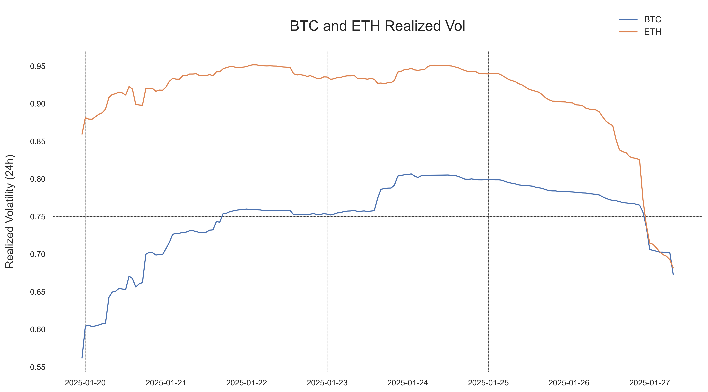

Volatility Ventures Weekly
Your Guide to Crypto Volatility
Cryptocurrency Market & Volatility Report
for the Week Ending January 26, 2025
BTC and ETH
The past week has been a rollercoaster for the cryptocurrency market, with significant volatility across major and minor cryptocurrencies.
Market Overview:
- Bitcoin (BTC):
Bitcoin experienced a bearish week, declining 3.63% from $103,109 to $99,361.
The cryptocurrency reached a peak of $108,154 before retreating below the psychological $100,000 level.
This price action suggests significant profit-taking at higher levels.

- Ethereum (ETH):
Ethereum showed more pronounced weakness than Bitcoin, falling 4.47% from $3,244 to $3,099.
The cryptocurrency touched a high of $3,403 before the decline, demonstrating higher sensitivity to market pressures than BTC.

Volatility Metrics:
Both Bitcoin and Ethereum have shown notable volatility patterns over the past week, with distinct characteristics
in their respective trading behaviors. The overall trend shows a compression in volatility levels, though with markedly different intraday patterns.

Key Findings:
-
Volatility Convergence:
Despite historically different volatility profiles, both assets are currently showing similar
realized volatility levels (BTC: 67.29%, ETH: 68.15%).
This unusual convergence suggests a potential market-wide stabilization phase.
- Volatility Compression
Both assets are experiencing significant volatility compression:
- BTC's current volatility is 10.4% below its period average
- ETH's compression is more pronounced, with current levels 25.2% below average
Weekly Volatility Table
| Asset |
Current Realized Volatility |
Period Average |
56.17% - 80.65% |
| BTC |
67.29% |
75.08% |
56.17% - 80.65% |
| ETH |
68.15% |
91.11% |
68.15% - 95.15% |
Outlook:
-
The current volatility convergence is unusual and may not persist.
Traders should monitor for potential divergence, particularly during their respective peak volatility hours.
The overall trend of decreasing volatility might indicate a maturing market, though historical patterns suggest this could be temporary.
Alternative cryptos
- The past week has seen broad-based weakness across alternative cryptocurrencies, with most assets experiencing notable declines. Sui (SUI) recorded the largest drawdown at -21.44%, followed by significant losses in Dogecoin (DOGE) at -13.54% and Stellar (XLM) at -12.77%. Only two assets posted positive returns: Tron (TRX) with a modest gain of 2.29% and USDT with a marginal 0.05% increase.
- Volatility patterns reveal significant dispersion across assets. Chainlink (LINK) showed the highest volatility at 109.83% annualized, closely followed by Dogecoin at 107.29% and Solana at 106.70%. In contrast, the stablecoins maintained their designed stability, with USDC and USDT showing minimal volatility at 1.04% and 2.09% respectively.
- Layer-1 protocols demonstrated varying degrees of weakness: Avalanche (AVAX) declined 5.97%, BNB fell 5.39%, while Solana (SOL) dropped 8.75%. Liquid staking derivatives tracked their underlying assets closely, with stETH and wstETH both declining around 4.27%.
- The market environment suggests a period of risk reduction, with higher-beta assets experiencing the largest drawdowns while established cryptocurrencies and stablecoins showed relative resilience.
Upside vs Downside Volatilities
Upside Volatility
Higher than downside: Bullish momentum, positive skew
Shows magnitude of upward price movements
Downside Volatility
Higher than upside: Bearish sentiment, negative skew
Important for risk management
The cryptocurrency market shows an overall positive volatility skew, with market-wide upside volatility
averaging 48.81% compared to downside volatility of 39.39%. This asymmetry suggests a constructive
market environment where positive price movements dominate negative ones.
Solana leads in asymmetric opportunities, with upside volatility of 86.39% against downside volatility of 39.04%, resulting in the highest upside/downside ratio of 2.21. Stellar and XRP follow this pattern, with Stellar showing the market's highest absolute upside volatility at 129.20%. These assets appear positioned for substantial positive price movements while showing relatively contained downside risk.
In contrast, several cryptocurrencies display defensive characteristics. Toncoin exhibits the most defensive profile with an upside/downside ratio of 0.48, indicating more frequent and larger negative price movements. USDC maintains minimal volatility in both directions (0.34% upside, 0.47% downside), while Avalanche shows a moderately defensive stance with higher downside volatility (56.62%) than upside (45.55%).
This diversity in volatility profiles reflects a maturing market where different assets serve distinct investment purposes, from aggressive growth opportunities to defensive positions. The clear segmentation enables investors to construct portfolios aligned with their risk preferences, challenging the notion that cryptocurrencies are uniformly high-risk assets.
30D Volatility Forecast


-
Current realized volatilities show a wide gap between BTC (44.21%) and ETH (62.63%),
reflecting ETH's traditionally higher activity. However, our 30-day forecast indicates a significant convergence,
with BTC expected to rise to 59% while ETH moves to 69%.
-
The notable projected increase in Bitcoin's volatility
(+33% from current levels) versus Ethereum's more modest rise
suggests evolving market dynamics. This convergence often precedes periods
of increased market activity and stronger correlation between the two assets.
-
Traders should prepare for potentially choppier markets ahead, particularly
in Bitcoin where the expected volatility increase is more pronounced.
Token Spotlight: Risk OFF
When the market turns turbulent, Risk OFF acts as your safety net.
This week, it showcased its prowess by minimizing losses in an otherwise volatile market environment.
Key benefits
- Better Sleep at Night: When you hold crypto directly, there's no protection against price crashes.
With Risk OFF, you know that even in a market crash, your losses are limited.
- More Predictable Investment Experience:
Direct crypto investing can feel like a rollercoaster. Risk OFF smooths out this experience by:
- Limiting your downside (you know the maximum you could lose)
- Still letting you profit from price increases up to a certain level
- Providing a clear risk-return profile that's easier to fit into an overall investment strategy
- Stay in the Market: Unlike stop-loss strategies where you have to exit your position (and might miss the recovery),
Risk OFF keeps you in the market. This means you can participate in the recovery if prices bounce back after a dip.
With ETH volatility expected to remain elevated ober the next 30 days, consider allocating 10-20% of your portfolio to Risk OFF. This will help protect against potential downside while allowing you to stay exposed to ETH’s upside potential.
Portfolio Allocation Example
| Asset |
Allocation |
Purpose |
| ETH |
80% |
Core investment |
| Risk OFF |
20% |
Downside protection during high volatility |
Token Spotlight: RiskON
For those looking to ride the waves of market volatility, RiskON was your ticket to high gains, reflecting the market's upward momentum this week.
Educational Corner
Volatility in crypto isn't just about numbers; it's about opportunity and risk. Here's a quick primer:
- Realized Volatility: The actual price variability of an asset over a specific time period, typically expressed as an annualized percentage. For instance, Bitcoin's 60% realized volatility means it typically fluctuates within a 60% range over a year.
- Implied Volatility: The market's forecast of likely future price movements, derived from options prices. Higher implied volatility suggests traders expect larger price swings ahead.
- Skewness: The asymmetry in returns distribution. Positive skewness indicates more frequent small losses but occasional large gains, while negative skewness suggests the opposite pattern.
Market News
President Donald Trump's policy moves, including the establishment of a crypto working group and exploring a U.S. cryptocurrency stockpile, had a stabilizing effect on the market, although the market remained below recent highs. This indicates the impact of political actions on crypto market dynamics.
From the Community
"Using RiskOFF during last week's dip saved my investment. I'm now looking forward to using RiskON as the market stabilizes." - AnonCryptoUser
Engage with Us
What's your take on this week's market volatility? Vote in our poll or ask us anything in our AMA session next Friday.